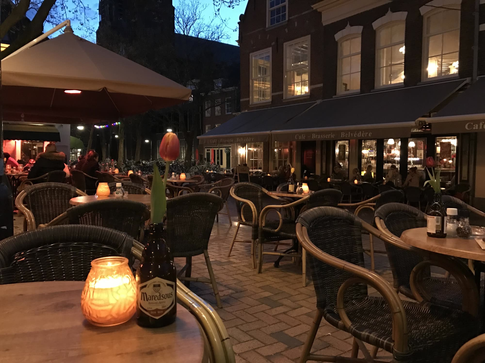
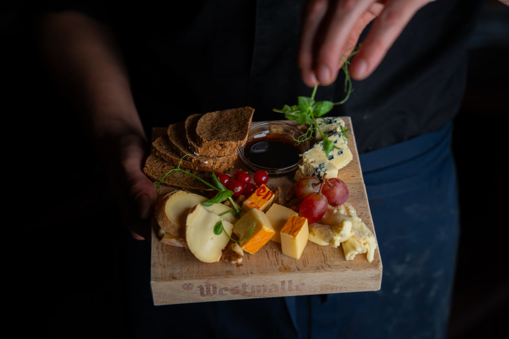
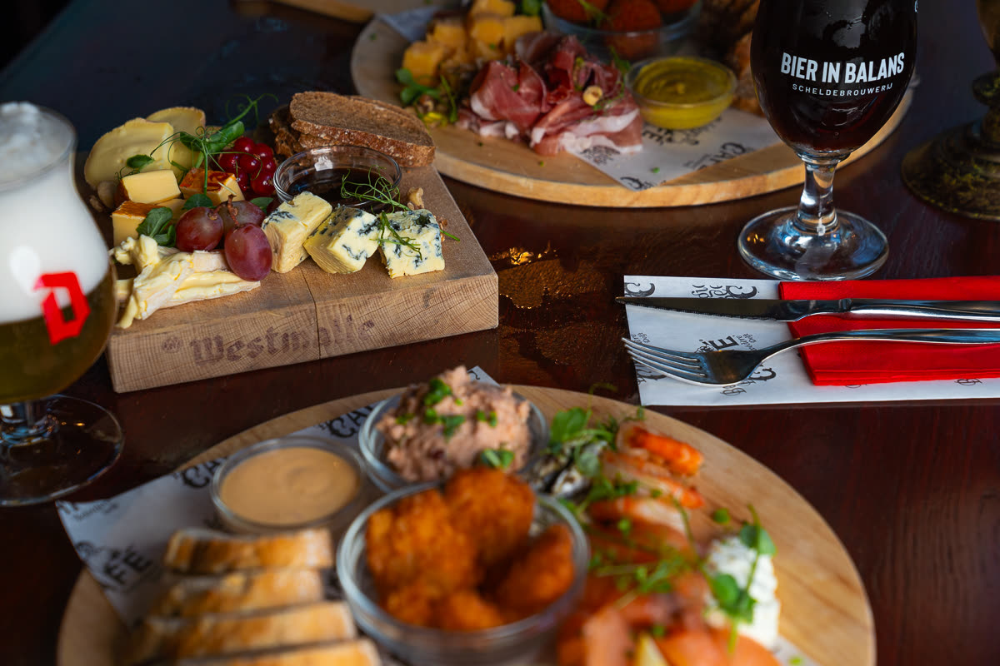
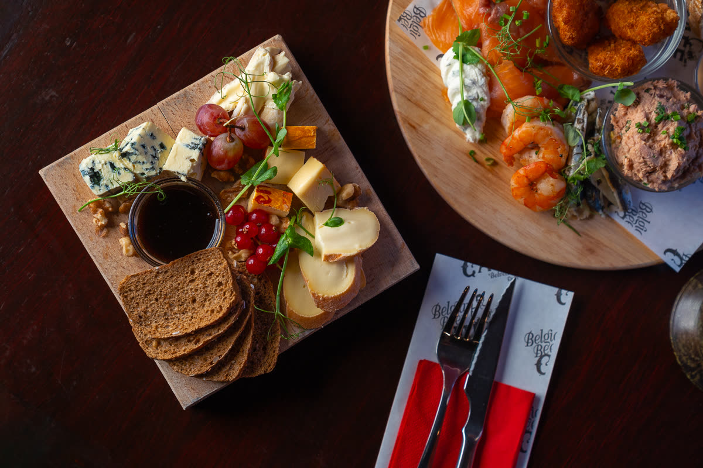
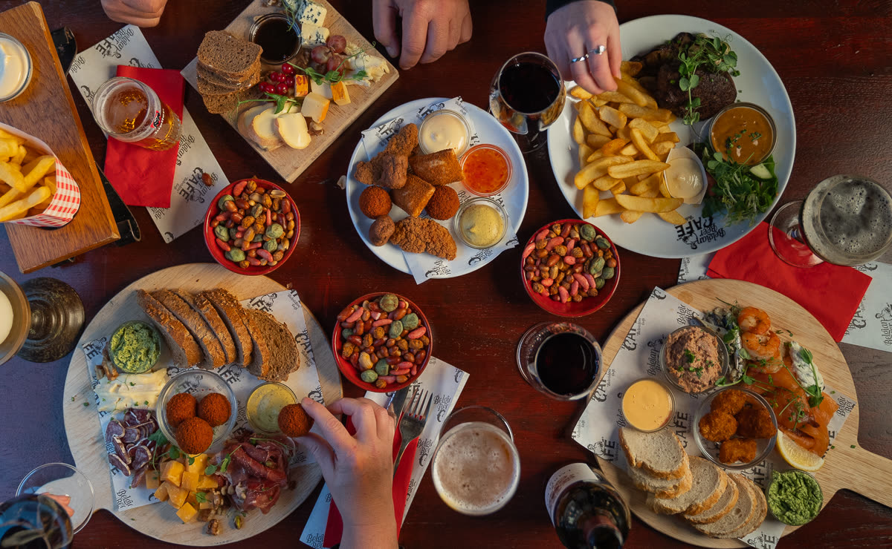
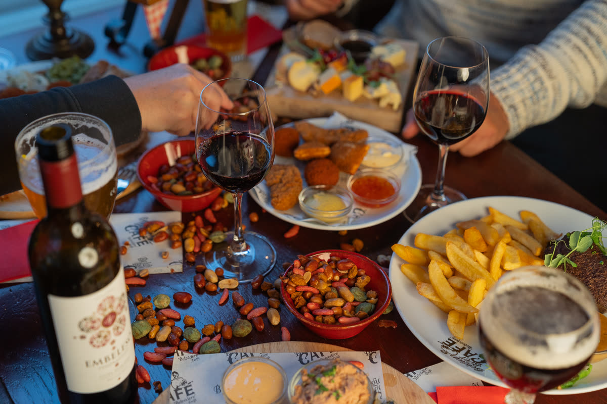

Belvédère
Beestenmarkt 8, DelftEen stukje België op misschien wel het mooiste plein van Nederland.
The place to be
Belgisch Bier Café Belvédère ligt op de Beestenmarkt, omringd door historische gebouwen, gezellige cafés en restaurants. Je kunt hier heerlijk eten en drinken, maar ook voor een feestje draaien we onze handen niet om.
Kom voor je dagelijkse portie gezelligheid, tijdens de lunch, de borrel of het diner. De Bourgondische bierliefhebber komt hier aan zijn trekken: van de tap is er altijd iets nieuws om te proeven, en op de fles staan er een paar hele mooie die je met vrienden kunt delen.
Gezellig en ongedwongen, dat is waar wij voor staan.

De bierkaart
Belgisch bier van de tap en ruim honderd bieren op de fles. De kaart wisselt regelmatig; dit is de stand van november.
Vast van de tap
Wisseltap
Deze tappen wisselen geregeld, dus er is altijd iets nieuws om te proeven.
Op de fles
Alle prijzen in euro. Stijlen en alcoholpercentages zoals vermeld op de bierkaart; de bieren met ‘tap’ staan zo op de kaart vermeld.
Uit de keuken
Lunch, borrel en diner, met Belgische en Bourgondische klassiekers.



Onze nieuwe kaart komt eraan. Tot die tijd vind je hieronder de gerechten van onze huidige kaart, zonder prijzen. Daarnaast hebben we elke week wisselende weekgerechten.
Lunch
- Brood gegrilde groenten
- Brood tonijnsalade
- Brood carpaccio
- Brood pulled chicken
- Brood geitenkaas
- Brood gerookte zalm
- Brood pittige kip
- 12-uurtje
- Uitsmijter Belvédère
- Kalfskroketten
- Groentekroketten
- Tosti kaas
- Tosti ham en kaas
Salades & burgers
- Geitenkaassalade
- Vissalade
- Pittige kipsalade
- Belvédère burger
- Vegan burger
- Vlaamse burger
- Kipburger
Bistro
- Carpaccio
- Aspergekroketjes
- Brood met kruidenboter & aioli
- Duivelse garnalen
- Groentekroketjes
- Tomatencrèmesoep
- Kipsaté
- Schnitzel Belvédère
- Puntpaprika geitenkaas
- Ribeye
- Varkenshaas
- Zalmfilet
- Molenaarsbrood
- Groene salade
- Luikse wafel
- Stroopwafel cheesecake
Borrel
- Koude borrelplank
- Belvédère plank
- Molenaarsbrood
- Olijven
- Delfts Goud
- Nootjes
- Nacho’s
- Nacho’s pulled chicken
- Kalfsbitterballen
- Bittergarnituur
- Kaastengels
- Kip karaage
- Mini kaassoufflés
- Vegan bitterballen
- Vegan loempiaatjes
- Gambanuggets
- Frikandellen
- Vlaamse friet
- Loaded fries
- Loaded fries met pulled chicken
- Loaded fries met gambanuggets
- Appeltaart
- Brownie
Mosselen
- Mosselen naturel
- Mosselen witte wijn
- Mosselen witbier
- Mosselen look en room
- Mosselen blauwe kaas
Asperges
- Aspergesoep
- Aspergesoep met zalm
- Asperges à la flamande
- Asperges met zalm
Heb je een voedselallergie? In onze keuken werken wij met allergenen. Bekijk de allergenenkaart of vraag het ons gerust.
Allergenenkaart (pdf)
Zakelijk of privé
Bij Belvédère ben je welkom voor elke gelegenheid. Ook grote groepen kunnen bij ons terecht: voor een vergadering, een afstudeerborrel of gewoon omdat er wat te vieren valt.
Groepen groter dan 15 personen reserveren vooraf, telefonisch via 015 212 32 97 of via info@bbcbelvedere.nl.
Vraag naar de mogelijkhedenReserveren
Reserveren mag, maar hoeft niet. Is er even geen tafel vrij, neem dan plaats aan onze ruime bar voor een drankje; we zorgen dat je snel een tafel hebt.
Veelgestelde vragen
Is reserveren verplicht?
Reserveren mag maar hoeft niet. Het kan zijn dat je even moet wachten tot er een tafel vrijkomt; je kunt dan aan de bar plaatsnemen voor een drankje. Groepen groter dan 15 personen moeten wel vooraf reserveren, via 015 212 32 97 of info@bbcbelvedere.nl.
Kan ik een tafel op het terras reserveren?
Tafels op het terras kunnen we niet reserveren. Je kunt het wel als voorkeur vermelden; we doen altijd ons best. Dit kunnen we alleen ter plekke voor je bekijken en regelen.
Hoe kan ik betalen?
Contant of met pin. We accepteren de creditcards Mastercard, Visa, American Express en Diners.
Cadeaukaarten die we accepteren: VVV Dinercheque (ook de papieren versie), NHC Nationale Horeca Cadeaukaart en de Dinerbon. Dinercadeau en Restaurant Cadeau accepteren we niet.
Open
| Maandag | 16:00 tot 00:00 |
|---|---|
| Dinsdag | 16:00 tot 00:00 |
| Woensdag | 11:00 tot 00:00 |
| Donderdag | 11:00 tot 01:00 |
| Vrijdag | 11:00 tot 01:00 |
| Zaterdag | 11:00 tot 01:00 |
| Zondag | 12:00 tot 00:00 |
Vraag het ons
Een vraag over een groep, een feestje of een vergadering? Stuur ons een bericht, of volg ons op Facebook, Instagram en TikTok via @BelvedereDelft om op de hoogte te blijven.